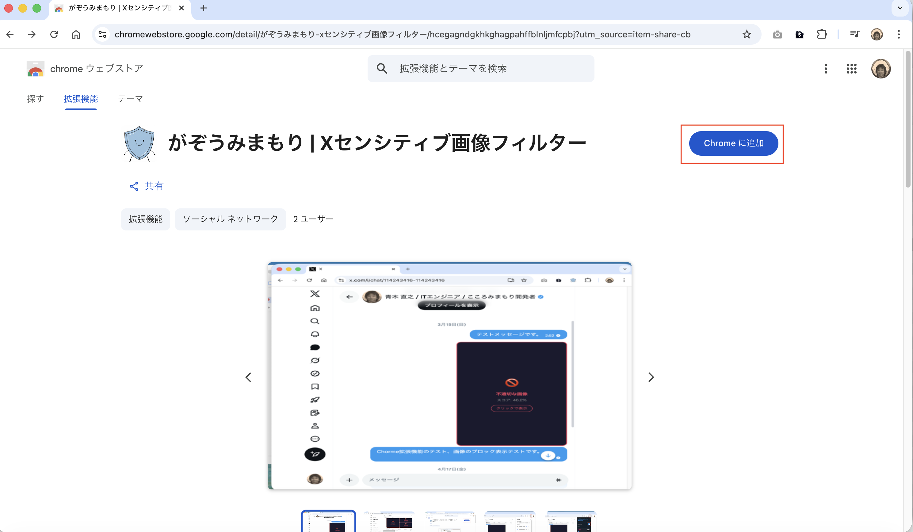
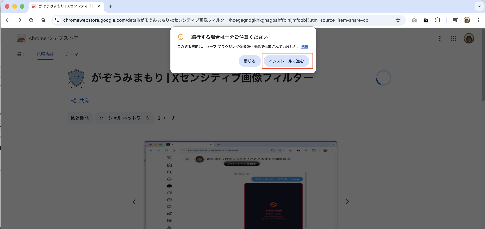
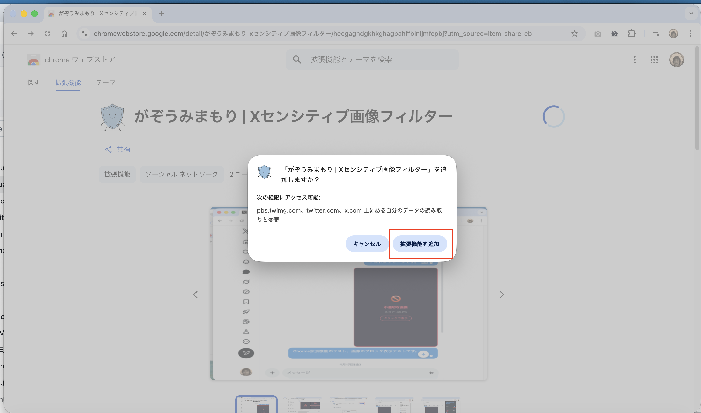
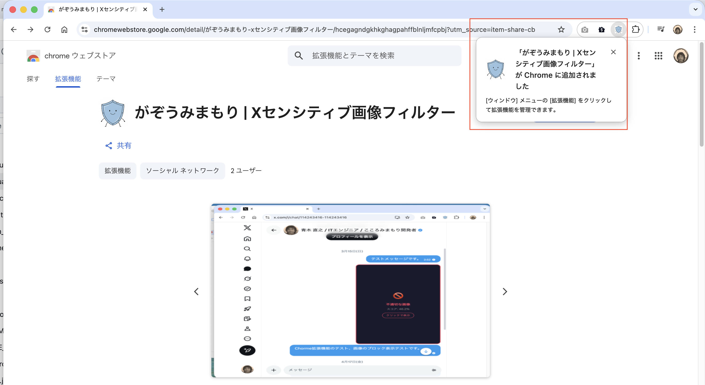
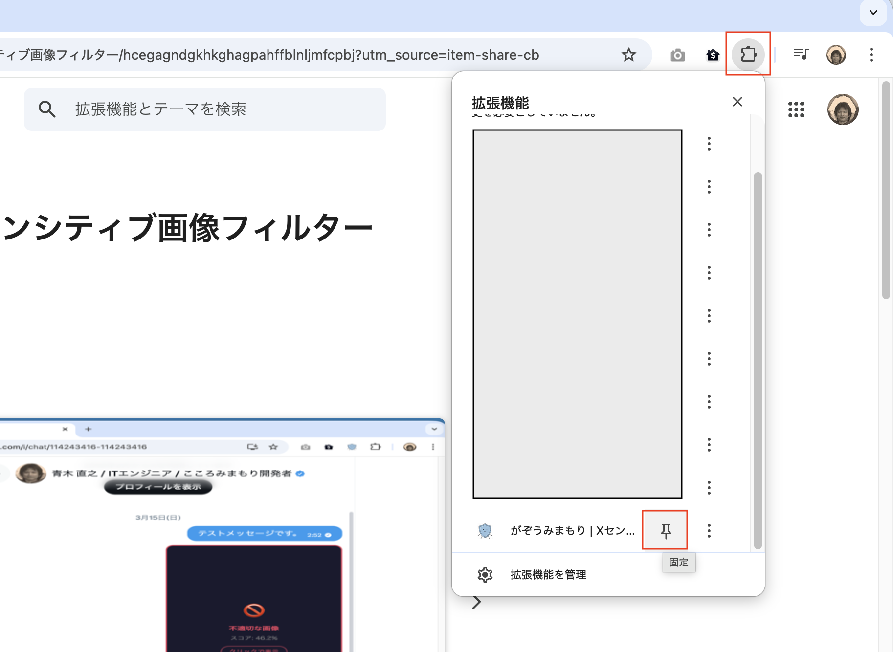
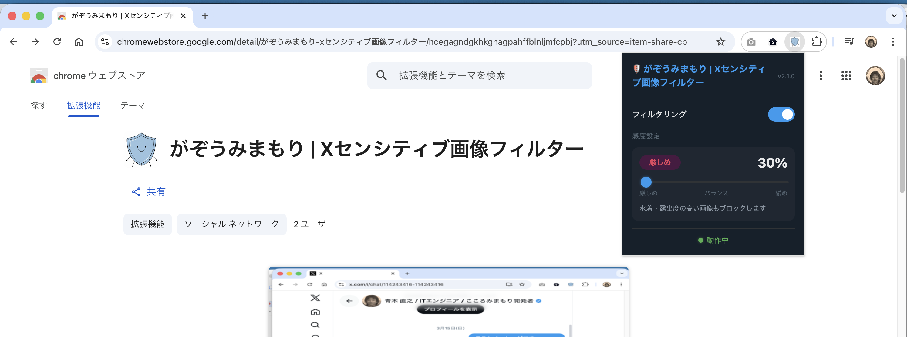
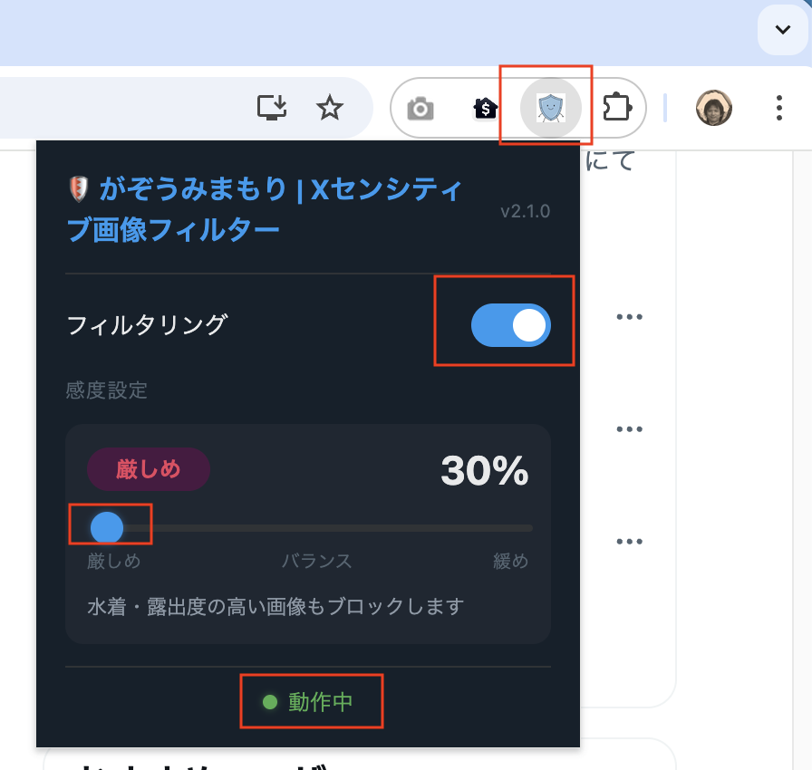
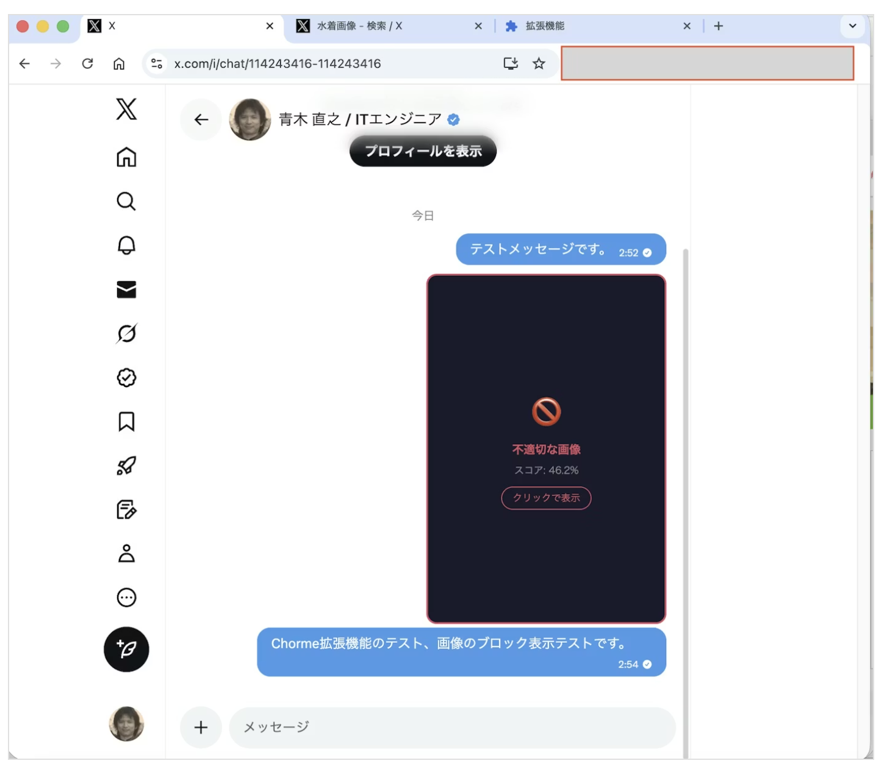
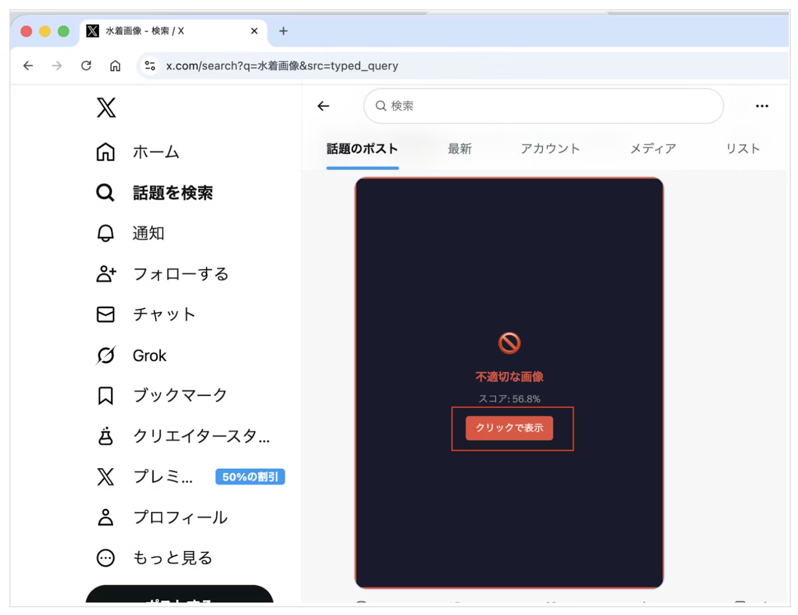

📌 本Google Chrome拡張機能は、あなたの画像データや個人情報を外部サーバーへ一切送信しません。すべての処理はお使いのブラウザ内のみで完結します。無料でご利用いただける機能です。
「がぞうみまもり | Xセンシティブ画像フィルター」（以下「本拡張機能」）は、X（旧Twitter）のタイムラインおよびDMに表示される不快な画像や過激な画像を自動的に検出・ブロックするChrome拡張機能です。
本ページでは、本拡張機能が取り扱う情報の内容とその扱い方について説明します。
本拡張機能の機能概要については、📖 がぞうみまもり紹介資料(PDF) をご参照ください。
本拡張機能の情報の取り扱いについては、📖 プライバシーポリシーページ をご参照ください。
本拡張機能はGoogle社さま審査済みの機能です。Google Chrome ウェブストア からChromeに追加いただけます。
Chromeへの拡張機能「がぞうみまもり」の追加は、以下の手順に沿って進めてください。
Chrome ウェブストアの「がぞうみまもり」ページ を開きます。「Chrome に追加」 をクリックします。

確認ウィンドウが表示されますので、「インストールに進む」ボタンをクリックします。

確認ウィンドウが表示されますので、「拡張機能を追加」ボタンをクリックします。

画面右上に「「がぞうみまもり | Xセンシティブ画像フィルター」が Chrome に追加されました。」と表示されます。

画面右上のボタンをクリックします。「がぞうみまもり」のピンをクリックして、Chrome上に「がぞうみまもり」アイコンを表示します。

Chrome上に「がぞうみまもり」アイコンが表示されたことを確認します。

本拡張機能は AI（機械学習モデル）によって画像が不快な画像や過激な画像である確率をスコア（0〜100%）で算出します。スコアが設定した閾値（しきい値）を上回った画像がブロックされます。
拡張機能のインストール直後の閾値は 30%（厳しめモード） です。水着・露出度の高い画像もブロックする設定です。
AI が算出する不快な画像や過激である確率です。スコアが高いほど、ブロックされる可能性の高い画像です。
| モード | 閾値の目安 | 特徴 |
|---|---|---|
| 厳しめ | 0〜40% | 水着・露出度の高い画像もブロックします。多めにブロックしたい場合に使います。 |
| バランス | 50%（初期値） | 標準設定です。明らかに不快な画像や過激な画像をブロックします。 |
| 緩め | 60〜100% | 確信度の高い画像のみブロックします。誤検知を減らしたい場合に使います。 |
⚠️ ご注意：AI による自動判定のため、不快な画像や過激でない画像がブロックされたり（誤検知）、不快な画像や過激な画像がブロックされない場合があります。感度スライダーを調整してお使いください。
ブラウザ右上の拡張機能アイコンをクリックすると、感度設定パネルが開きます。
Chrome ブラウザ右上のアドレスバー横にある 🛡️ シールドアイコン をクリックします。パズルアイコン（🧩）からピン留めすると、すぐにアクセスできます。
パネル上部の 「フィルタリング」 トグルが オン（青色） になっていることを確認してください。オフになっていると、画像はブロックされません。
「感度設定」のスライダーを左右にドラッグします。左（厳しめ） にするほど多くの画像がブロックされます。右（緩め） にするほどブロックされにくくなります。
パネル下部に ● 動作中 と表示されていれば、設定は有効です。X のページをリロードすると新しい感度が反映されます。

▲ 感度調整パネルの表示例（厳しめ・30% に設定した状態）
X のダイレクトメッセージ（DM）で不快な画像や過激な画像と判定された画像は、以下のように暗いオーバーレイに置き換えられて表示されます。

▲ DM 画面での画像ブロック表示例（スコア: 46.2%）
💡 表示内容の説明：ブロックされた画像の上には「🚫 不適切な画像」と AI が算出したスコアが表示されます。スコアは設定した感度閾値を超えた割合を示しています。
X のタイムラインや検索結果でも、不快な画像や過激な画像と判定された画像は同様にブロック表示されます。

▲ タイムライン（検索結果）での画像ブロック表示例（スコア: 56.8%）
💡 対応している場所：ホームタイムライン・検索結果・プロフィールのメディアタブ・DM など、X 上のあらゆる画像表示箇所に対応しています。
ブロックされた画像でも、必要に応じて 1 枚ずつ確認することができます。
不快な画像や過激な画像と判定された画像のオーバーレイ中央に、以下のようなボタンが表示されます。
ボタンをクリックすると、その画像のブロックが解除されて元の画像が表示されます。他の画像には影響しません。
「クリックで表示」は一時的な解除です。ページを再読み込みすると、同じ画像が再びブロックされます。
⚠️ 誤検知が気になる場合：特定の画像が繰り返し誤ってブロックされる場合は、感度スライダーを「緩め」方向に調整するとブロックされにくくなります。→ スライダーの調整方法（3 節）
本拡張機能に関して、ご不明な点・ご意見・ご感想などありましたら、プライバシーポリシーページの「お問い合わせ」先までご連絡ください。
← プライバシーポリシーを表示する